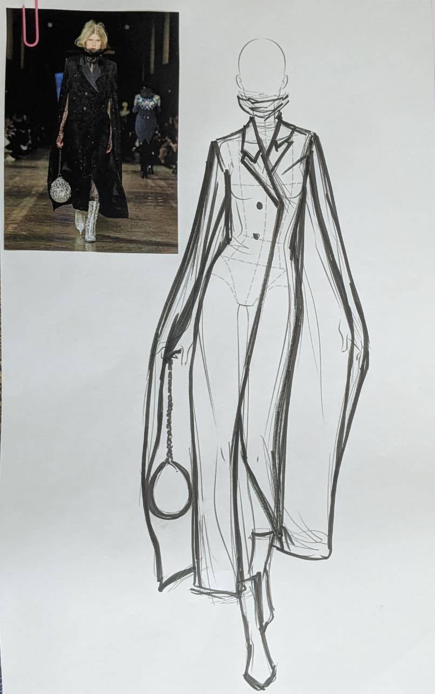
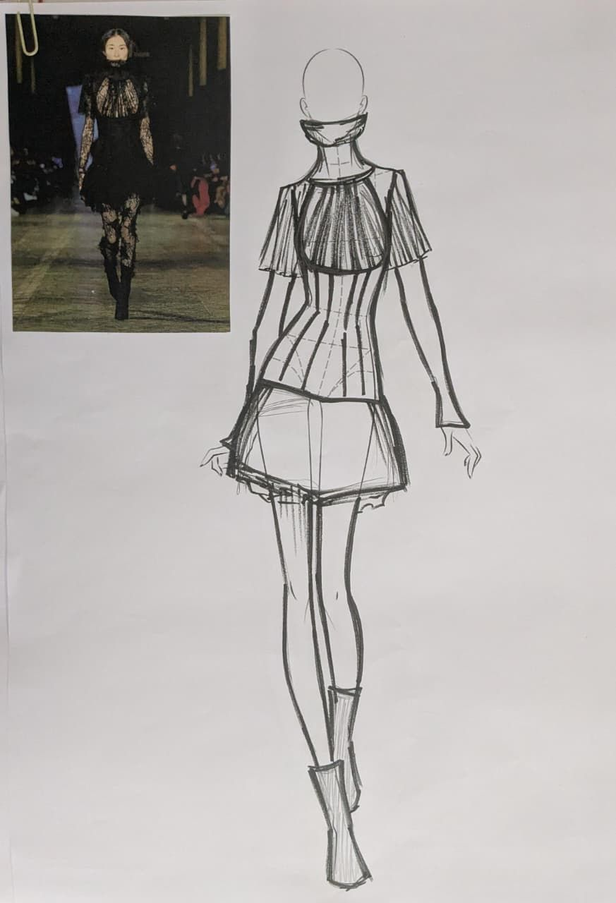
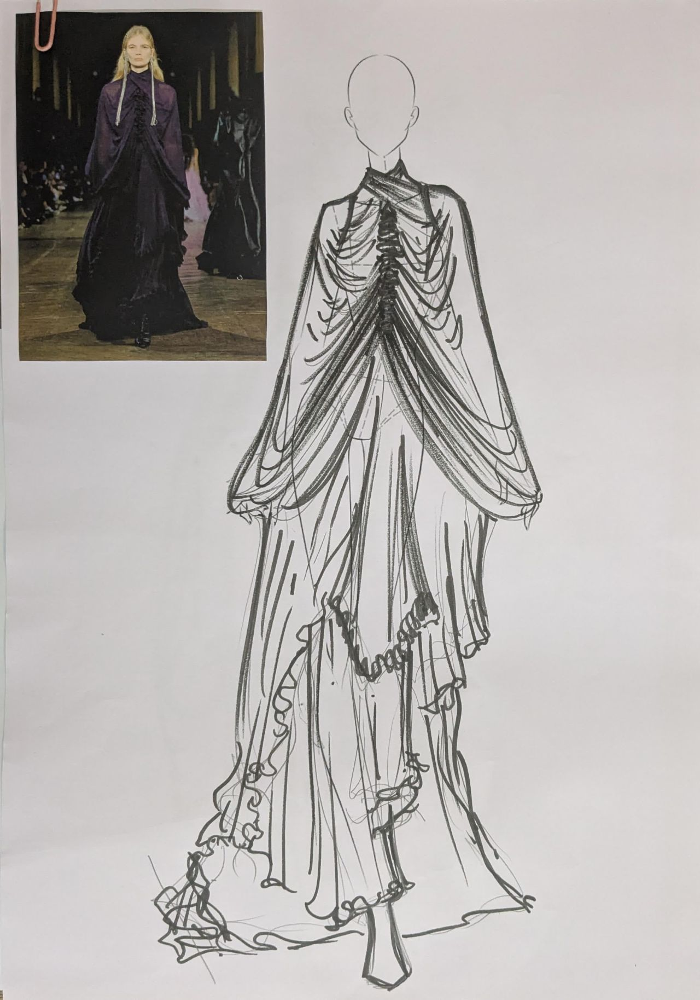
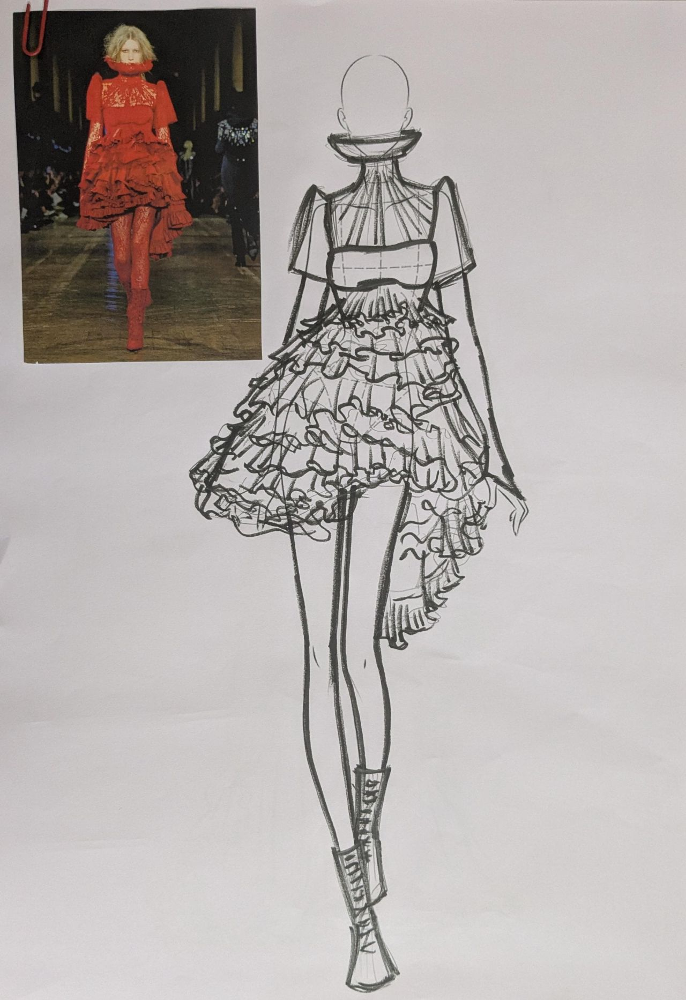
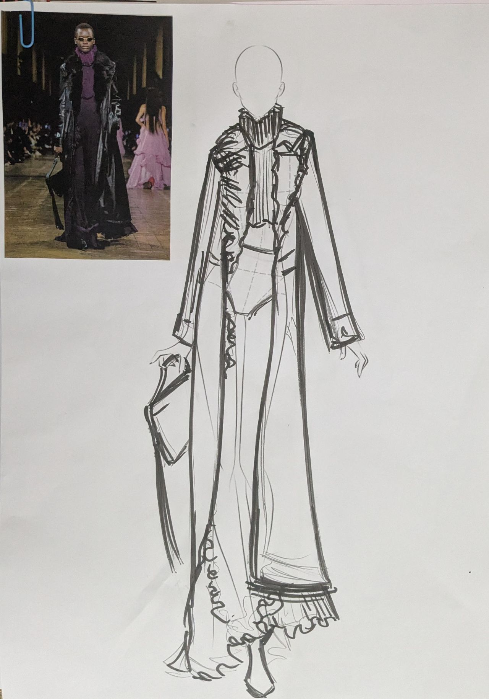

A deep dive into Alexander McQueen's conceptual design philosophy — exploring how his garments transcend fashion to become architecture, storytelling, and art.


What drew me to Alexander McQueen's work is not simply the beauty of his garments, but the way he used fashion as a vehicle for profound storytelling. His designs were never just clothes — they were wearable emotions, architectural explorations, and conceptual statements that challenged the viewer to confront themselves.
For this project, I selected five looks from his Fall 2025 collection to study his approach to silhouette, proportion, and craftsmanship. Through detailed line drawing illustrations, I traced how each garment was constructed, where the eye is drawn, and how the body is transformed within the fabric.
McQueen's legacy reminds us that fashion can be intellectual and deeply moving at once — capable of making people feel something that words cannot reach.
Each silhouette McQueen crafted tells a story about structure. The Fall 2025 collection shows his signature approach: unexpected proportions, dramatic angles, and an obsessive attention to how the body moves through space. The silhouettes range from sharp and geometric to flowing and ethereal — a conversation between control and freedom.
Silhouette study from the Fall 2025 show — a sharp-angled jacket with dramatic shoulder treatment. The line drawing breaks down the geometric precision that allows the body to move unexpectedly within the garment. Construction details are visible at seams and edges.


Two approaches within the same collection — one uses drape and movement, the other uses geometric structure. Both reveal McQueen's understanding of how a silhouette becomes an extension of human emotion rather than just coverage for the body.
The craft in a McQueen garment is relentless. Seams are placed where you'd least expect them. Finishes are obsessive. Every hand-stitch, every strategic cut in the fabric serves a purpose — not decorative, but conceptual. This is the hallmark of his work: the marriage of idea and execution.

A detail study focusing on construction. Each line in the illustration represents a conscious choice — where fabric meets fabric, where the hand of the maker is visible. This is the vocabulary McQueen taught us to see and celebrate in fashion.
Years after his passing, McQueen's influence remains immense. His shows were not just runway presentations — they were immersive experiences that provoked thought. The VOSS collection with its mirrored walls and sense of psychological entrapment, his exploration of vulnerability and madness, set a precedent for fashion as an art form that demands intellectual engagement from the audience.
What I take away from studying his work is a profound respect for the power of fashion as a medium. It can be both viscerally emotional and intellectually complex. It can make people confront themselves. And most importantly, it reminds us that the person making the garment — their vision, their passion, their craftsmanship — is what transforms fabric into significance.